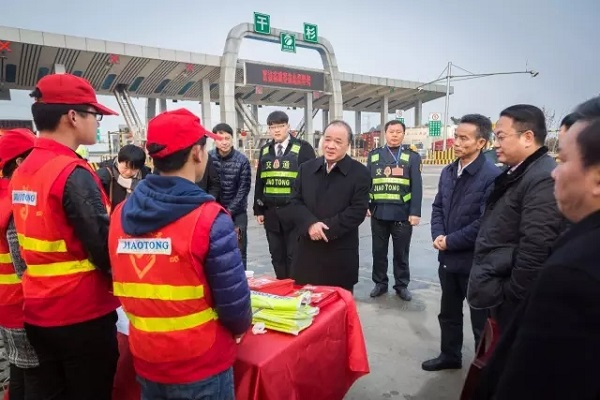
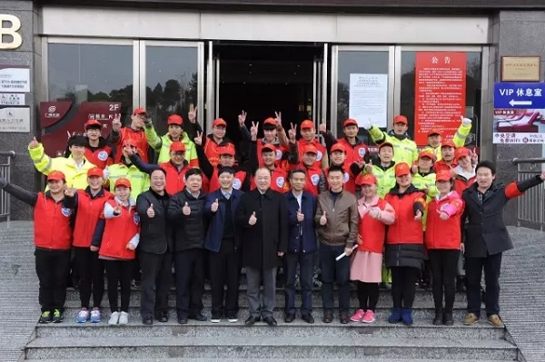

赵平慰问“办人民满意交通”志愿服务者
桂电志愿者网 日期：2017-02-13 来源：湖南省交通运输厅
春节假期结束,全力保障春运平安出行仍是最重要的任务。2月9日上午,湖南省交通运输厅党组副书记、副厅长赵平前往干杉收费站、长沙服务区走访慰问“办人民满意交通”志愿服务者。赵平仔细询问大学生志愿者的工作职责和体会感受,并一一向这些放弃寒假休息的大学生们表示感谢。省高速公路管理局党委书记、局长谢立新,湖南交通职业技术学院院长姚利群等陪同慰问。

赵平询问大学生志愿者的工作情况。
在干杉收费站路边,志愿者在服务桌前为过往的司机递上一份高速地图,送上一杯热水。长沙服务区里,志愿者们疏导交通,指引车辆有序进出,在停车区里放置警示标语及横幅提醒过往人员保持卫生。春节期间,志愿者李胜昔在长沙服务区加油站附近发现一名走散的小女孩,及时联系,帮走失孩童找到了父母。据了解,此次志愿活动根据大学生个人特点进行岗位分工,还为过往司乘人员提供高速地图、信息咨询、手机免费充电、药品和婴幼儿用品。

长沙服务区,慰问领导与大学生志愿者们合影,领导们纷纷“点赞”。
此次志愿服务活动是湖南省交通运输厅根据“办人民满意交通”为指导思想来组织实施。从1月11日开始,80名大学生分两批开展为期近一个月的志愿者服务工作。志愿者在湖南高速公路长沙服务区、干杉收费站等岗位,从事交通安全劝导、秩序维护、咨询引导、便民利民等工作。
走访慰问中,赵平充分肯定了此次志愿服务工作,对投身到“办人民满意交通”志愿服务中的大学生表示赞扬。他指出,此次“办人民满意交通”志愿服务有“三好”。一是组织好,各部门联动,顺利组织好此次活动。二是实施好,在维护、疏导、保洁等方方面面都工作周全。三是效果好,志愿者服务的社会反响好。
赵平强调,“办人民满意交通”志愿服务活动一举多得,让司乘人员受益,助力春运保畅;让行业受益,树立了良好的行业形象,助推了“办人民满意交通”工作理念;让学生受益,加强了学生与社会的联系,体现了自身价值。
他要求要将此次志愿服务活动总结好、宣传好、推广好,并指出在节假日,志愿者服务是刚性需求,需大力复制推广,因地制宜,形成较好的志愿模式,服务区+当地学校和社会团体,让每个服务区都有志愿者的身影。通过志愿服务活动,动员更多的志愿者积极投身到服务交通运输发展中来,力争形成常态化机制,逐步打造成为湖南交通运输服务的又一品牌。
【责任编辑：成都志愿者】